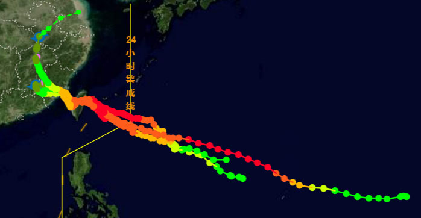

台风实时监测预警包括2部分：
(1) 当台风进入24小时警戒线，系统发出警示信息，并且实时显示中央气象台及各家发布的台风移动和预报信息，提醒金风科技现场人员和风电场管理人员密切关注台风动向。
(2) 风电场台风监测预警。目前商定对福建中广核大练岛一期风电场（25°41′45″，119°46′30″）、三峡兴化湾试验风场（25°23′50″，119°29′10″）进行实时监测预警（见图1）。
风电场台风相似路径监测。当台风台风进入福建大练岛风电场500公里范围，系统启动相似台风监控，显示历史相似路径和强度的台风信息。
大练岛风电场应对预案。风电场开始绘制本风电场测风塔的风向、风速、气压图，参考历史台风范例，判断影响风电场的台风可能风险，采取相应的措施。
图1 大练岛一期、三峡兴化湾试验风场风电场和测风塔位置图
-
1 影响风电场的台风
以大练风电场为中心100公里范围内为影响大练岛风电场的台风，达到台风及以上强度的共6个，分别为1521、1513、1410、1312、0513、9418。其路径主要为穿过台湾岛进入台湾海峡进入风电场海域，其次是从台湾北部沿海西行登陆福清和长乐一带（见图2）。
图2 影响大练岛风电场的主要台风路径
以兴化湾风电场为中心100公里范围内为影响兴化湾风电场的台风，达到台风及以上强度的工9个，分别为1410、1312、0505、9608、9418、8510、7123、6007、5905。由于2个风电场距离只有40多公里，在2风电场之间经过的1410、1312、9418台风对两个风场都有影响。影响风电场台风的路径主要为穿过台湾岛进入台湾海峡经过风电场海域，其次是从台湾北部沿海西行登陆福清和长乐一带（见图3）。

图3 影响兴化湾风电场的主要台风路径
本部分旨在通过分析不同路径和强度的台风，分析其影响期间风电场内测风塔观测到的风速、风向、气压的变化，指导风电场管理和运行维护人员，一旦台风实时监测系统报警台风将影响风电场并选到了历史相似台风，对照历史台风范例，正确判断台风的可能影响程度，采取相应的防范措施。
-
2 大练岛风电场历史台风范例
大练岛一期风电场共有3座测风塔，9812#观测时间20150701-20160307和201605-12，7055#观测时间20080903-20091130，7029#观测时间200712- 200906.经查9812#观测到201513、201521、201601、201614、201617共5个台风过程（见图4），7029#观测到200807、200808、200813共3个台风，7055#观测到200813、200903、200908共3个台风。选择强度较强201513、201521、201601、201614、201617和200908作为典型个例，其中201513、201521、201617路径相似，风电场位于台风中心附近的右侧；200908于风电场的东北部经过，风电场位于台风的左侧；201614台风路径偏南距风电场较远，但台风强度很强，风电场风较大。分析三种路径的台风影响期间风电场风向、风速、气压的演变过程，为台风实时监测和预警提供参考。

图4 201513和201521和201617台风路径图
-
2.1 201513-台风-苏罗迪
2015年第13号台风“苏迪罗”7月30日20时在关岛以东洋面上生成，稳定向西偏北方向移动，8月3日14时迅速发展为超强台风。8日4时40分在台湾花莲附近登陆，22时10分在莆田市秀屿区沿海再次登陆（见图4），登陆时近中心最大风速38米/秒，中心最低气压970百帕。受“苏迪罗”影响， 8日厦门以北沿海县市出现10级以上大风，北部沿海12～13级，中部沿海达14～16级。其中莆田涵江最大53米/秒。宁德霞浦县本站极风速47米/秒、福州市区风速37.7米/秒，均突破历史记录。沿海和内陆8级强风持续时间长达46小时（7日05时～10日15时）。
“苏迪罗”是经过风电场最强的台风，风电场位于台风路径的右侧，9218#测风塔观测到了“苏迪罗”台风经过的全过程，以此为例作为风电场在台风中心左侧台风监测预警的例子。
9812#90米高度自7日21:30开始最大风速达25m/s，之后风力逐渐增大，8日8:00达35m/s，之后快速增大，到9:40达40m/s，此时风电场处在台风的最大风速区，40m/s以上9:40到14:40持续了5个小时，其中最大为49.1m/s，分别出现在8月8日12:30和14:10（见图5）。之后随着台风中心经过，风速快速减弱，到19:20到19:40达到最低，20.8m/s,之后随着台风中心过后，风速快速增大，到20：30达到台风过程的第2个峰值34.3m/s,之后随着台风登陆风速迅速减弱。
风电场位于台风中心右侧，台风过程风向呈顺时针变化120度，其中台风中心接近风电场15:00到15:20风向变化很快，台风中心过后20:00到22:30风向的变化很快。
图5 201513台风9812#90米高度7月7-8日风速风向演变图
-
2.2 201521-台风-杜鹃
201521号台风“杜鹃”于2015年9月23日02时在西北太平洋洋面上生成， 28日17时50分左右在台湾宜兰沿海登陆，29日8时50分登陆福建莆田秀屿区沿海，29日8时50分在福建莆田市秀屿区登陆，登陆时中心附近最大风速33米/秒，中心最低气压975百帕。“杜鹃”与“苏迪罗”的移动路径非常相似，只是强度略弱（见图5）。29-30日，28个县(市)的73个站出现8级以上大风，以平潭牛山岛37.5米/秒（13级）为最大；34个县(市、区)的154个站点出现10级以上阵风，其中平潭牛山岛、平潭北厝、晋安区北岭风力达14级，以平潭牛山岛的45.9米/秒为最大。
9812#90米高度自9月28日16:10开始最大风速达25m/s，之后风力逐渐增大，29日0:50风速达36m/s,一直稳定到3：30,3:40达突然增大到49.1m/s（见图7），之后快速减弱，到4:50达到最低，17.6m/s,之后随着台风中心过后，风速再次增大，到5:10便达到台风过程的第2个峰值36.3m/s,之后随着台风登陆风速迅速减弱。
风电场也位于台风中心右侧，台风过程风向呈顺时针变化了120度，即由20度转到140度，其中3:30-3:50台风中心接近风电场风向变化很快，台风中心过程中风向摆动不定，台风过后5:50到6:40风向的变化很快。

图6 201521台风9812#90米高度9月28-29日风速风向演变图
-
2.3 201617-台风-鲶鱼
“鲶鱼”、“杜鹃”和“苏迪罗”的移动路径非常相似，“鲶鱼”与“杜鹃”接近（见图4）。201617台风“鲶鱼”于9月23日生成，27日02时加强为超强台风，27日14时10分在台湾花莲沿海登陆，28日凌晨4时40分前后在福建省泉州市惠安县沿海再次登陆，登陆时中心附近最大风力12级（33米/秒），中心最低气压为975百帕。
9812#90米高度自9月27日4:10开始最大风速达20m/s以上，7:00至15:30风速快速增大到41.3m/s，15:40-19:20维持在35-40m/s之间，29日0:50风速达36m/s,19:30-23:40为风速最大的时段，40-45m/s（见图7上）,27日23:50-28日1:50快速减弱，到1:50达到最低，25.8m/s,之后风速快速增大，到2:50便达到台风过程的第2个峰值36.3m/s,之后随着台风西行登陆风速迅速减弱。
风电场也位于台风中心右侧，台风过程风向呈顺时针变化了134度，即由12度转到146度，其中27日23:40-28日1:40伴随着台风中心逼近风速快速减弱风向快速变化，之后到2:30是台风中心滞留的时段，风向相对稳定，另一段风向快速变化是风速达到第2个峰值并开始减弱的时段。
值得注意的是气压在28日0时到0:40最低且稳定（见图7下），达到最低的时间超前于风速。
图7 201617台风9812#90米高度风速风向(上)、气压演变图(下)
综观“鲶鱼”、“杜鹃”和“苏迪罗”三个台风，风电场均位于其右侧，即台风前进方向的右半圆的强风区，“苏迪罗”和“鲶鱼”40m/s以上风速分别持续了5小时和4小时10分。风向变化均呈顺时针变化了120以上，其中在第一风速峰值之后开始减弱到最低值和风速开始增强达到顶峰值风向变化最快，台风中心经过时风向稳定或小幅波动。
-
2.4 201614-台风-莫兰蒂
201614号台风“莫兰蒂”于9月10日14时生成，其路径及强度变化见附图1。“莫兰蒂”生成后稳定向西偏北方向移动，12日凌晨发展为超强台风，9月14日下午由台湾省南部海域进入巴士海峡，穿过海峡后于15日03时05分在福建省厦门市翔安区沿海登陆（见图8），登陆时中心最大风力15级（48米/秒）。“莫兰蒂”代表了不登陆台湾由海峡北上影响福建的台风。
图8 201614号台风“莫兰蒂”路径图
9812#90米高度自9月14日1:20开始风速大20m/s以上，1:10开始最大风速超过25m/s，9:20-14:20风速在28-32m/s之间，14:30-15:50风速增加最快（28-36m/s），36m/s风速维持到16:20（见图9上），对应着气压降到最低（见图9下），此时正值台风刚进入台湾海峡，随着台风向西北移动并开始减弱，风电场的风力开始快速减弱。
由于风电场距离台风中心距离较远，处于台风外围的大风区，风向变化相对稳定。气压与风速变化相匹配，气压下降风速最大，气压达到最低风速达到最大，台风移走气压回升风速快速减弱。
图9 201614台风9812#90米高度9月14日风速风向（上）气压（下）演变图
-
2.5 200908-台风-莫拉克
200908号台风“莫拉克”于8月4日02时在西北太平洋生成，生成后向偏西方向移动，于7日23:45台湾省花莲登陆，8月8日进入台湾海峡，于9日16:20在福建省霞浦北壁登陆（见图10），登陆时中心最大风力12级（33米/秒），中心最低气压955百帕。“莫拉克”代表了从风电场北部移动的台风路径。
图10 200908号台风“莫拉克”路径图
7055#位于台风移动路径的左侧，距离台风的最近距离约70多公里，处于台风前进方向的左半圆，最大风速半径偏外的范围。7055#70米高度自8月7日4:20台风位于台湾以东洋面的时候便开始刮起20m/s以上的偏北大风，之后逐渐增大，到23:50达到35m/s左右，到8日11:50台风中心快要进入台湾海峡时达到最大43.9m/s（见图11），直到18:20风速维持在35-40m/s之间，之后开始减弱，到9日3:20风速大最小15.6m.s，之后风速增大，5:30达到29.8m/s之后逐渐减弱。此时台风刚进入台湾海峡向西北移动并开始减弱，风电场的风力开始快速减弱。
风电场位于台风中心左侧，8日2:00至6:10风向由15度快速转到95度，正好是风速由35m/s增大到40m/s的时间，其它时间风向相对稳定。
图11 200908台风9812#70米高度8月7-9月6日风速风向演变图
-
-
3 兴化湾风电场历史台风范例
兴化湾试验风电场西北部设有0783#测风塔，观测时间2015年11月5日-2016年11月5日，观测期间有201601、201614和201617号台风有些风电场（见图12），其中201614“莫兰蒂”和201601号台风“尼伯特”移动路径偏南，“尼伯特”进入海峡的强度较弱，因此这里以201617号台风“鲶鱼”为例进行分析。
图12 2016年影响兴化湾风电场台风路径图
0783#只有小时数据，因此台风经过时细致的信息有些被漏掉了。另外由于0783#位于东港湾东南侧的鲎屿岛上，东、北、西陆地环绕，其东边约2公里是三山镇前薛村福清核电站，因此201617号台风“鲶鱼”影响期间0783#的风速较9812#小的多，但大风的变化趋势与9812#还是一致的。0783#80米高度自9月27日12时风速达20m/s以上，16时增大到29m/s，22时达到台风过程第1风速最大值32.4m/s（见图13）,之后快速减弱，到28日2时达到最低15.4m/s,之后风速增大到台风过程的第2个峰值20.3m/s,之后随着台风西行登陆风速迅速减弱。
风向变化，27日20时到28日9时，0783#由16度转到142度，顺时针变化了126度。
图13 201617号台风“鲶鱼”0783#风速风向演变图
福建省气象局在东港湾西边的江阴港建立了自动站，观测风杆高度10米，也只有小时数据。201617号台风“鲶鱼”影响期间江阴港自动站自9月27日16时风速超过15m/s，28日1时达到台风过程第1风速最大值24.9m/s（见图14）,之后快速减弱，到28日4时达到最低15.8m/s,之后风速增大到台风过程的第2个峰值20.2m/s,之后风速迅速减弱。
风向变化，27日21时到28日9时，江阴港自动站风向由9度转到121度，顺时针变化了112度。特别是28日4-5时风向由50度转到115度，转角65度。

图14 201617号台风“鲶鱼”江阴港自动站风速风向演变图
由201617号台风“鲶鱼”两个风场的风速变化可以看出，尽管大练风电场距离台风中心远，但由于其海面宽阔，风速较兴化湾风电场高大约10m/s，台风影响期间需谨慎应对。